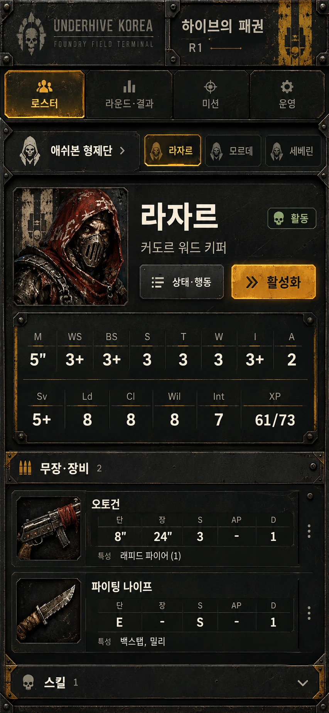
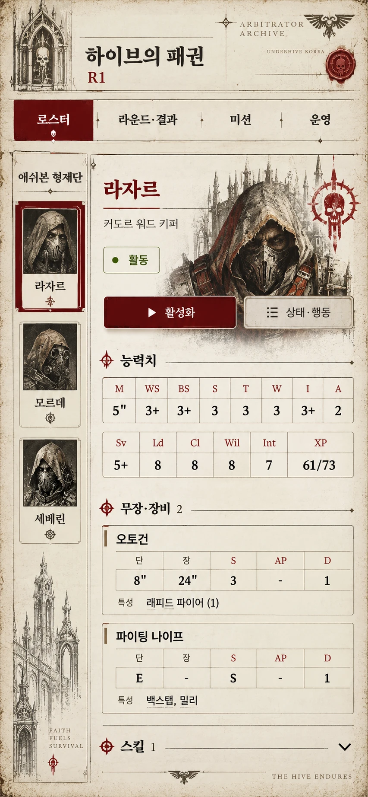
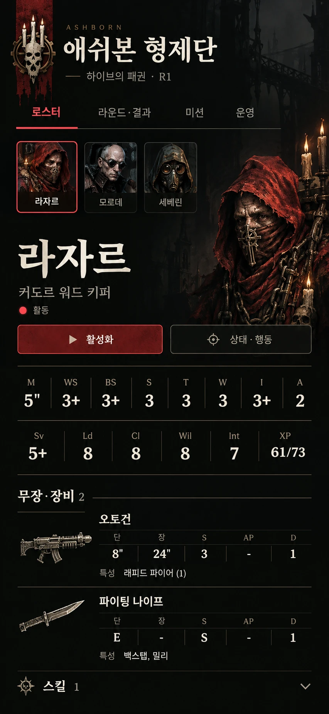

1번 · 공업용 전투 단말기
검은 금속, 경고색, 묵직한 장비 패널


1번 크게 보기같은 전투 로스터를 세 가지 분위기로 구성했습니다. 이미지를 누르면 전체 이미지을 크게 볼 수 있습니다.
검은 금속, 경고색, 묵직한 장비 패널

1번 크게 보기상아색 기록지, 붉은 인장, 고딕 장식

2번 크게 보기검정과 진홍색, 갱 문장, 캐릭터 중심

3번 크게 보기